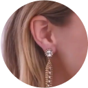

Magicbax - sunt niște cleme unice, special concepute pentru cercei. Ele împiedică atârnarea cerceilor din cauza greutății pe lobul urechii. Ca urmare, cerceii se poziționează corect, exact așa cum ar trebui.
Nu mai trebuie să vă faceți griji din cauza lobului urechii întins sau a găurii mărite în ureche odată cu vârsta. Acum puteți arăta superb și elegant cu orice cercel pe care îl alegeți. Chiar și cu cei mai grei! Aceste cleme speciale devin din ce în ce mai populare în rândul femeilor din întreaga lume în fiecare zi.

Accesoriu funcțional Ridică cerceii și previne întinderea lobului urechii, bijuteriile arată mult mai impresionant.

Hipoalergenice Clemele nu provoacă iritații ale pielii sau alergii.

Confort în utilizare MagicBax se potrivesc la cercei de orice dimensiune și formă.

Siguranță Clemele fixează ferm cerceii, astfel încât nu mai trebuie să vă faceți griji că bijuteriile preferate se vor pierde.

Calitate excelentă Fabricate dintr-un material special care își va păstra aspectul perfect pentru mulți ani.
Comandă